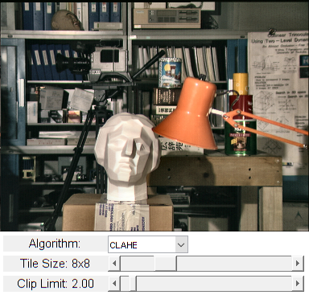

CLAHE (Contrast Limited Adaptive Histogram Equalization)
In this demo, we will learn the concepts of histogram equalization and use it to improve the contrast of our images.
Sources:
Contents
Histogram Equalization
Consider an image whose pixel values are confined to some specific range of values only. For example, brighter image will have all pixels confined to high values. But a good image will have pixels from all regions of the image. So you need to stretch this histogram to either ends (as given in below image, from Wikipedia) and that is what Histogram Equalization does (in simple words). This normally improves the contrast of the image.

Refer to the Wikipedia page on Histogram Equalization for more details about it. It has a very good explanation with worked out examples.

You can see histogram lies in brighter region. We need the full spectrum. For that, we need a transformation function which maps the input pixels in brighter region to output pixels in full region. That is what histogram equalization does.
First we find the minimum histogram value (excluding 0) and apply the histogram equalization equation as given in Wikipedia. At this point we would have the look-up table that gives us the information on what is the output pixel value for every input pixel value. So we just apply the transform. Next we calculate its histogram and CDF as before, and result would look like below :

Another important feature is that, even if the image was a darker image (instead of a brighter one we used), after equalization we will get almost the same image as we got. As a result, this is used as a "reference tool" to make all images with same lighting conditions. This is useful in many cases. For example, in face recognition, before training the face data, the images of faces are histogram equalized to make them all with same lighting conditions.
OpenCV has a function to do this, cv.equalizeHist. Its input is just grayscale image and output is our histogram equalized image.

So now you can take different images with different light conditions, equalize it and check the results.
Histogram equalization is good when histogram of the image is confined to a particular region. It won't work good in places where there is large intensity variations where histogram covers a large region, ie both bright and dark pixels are present.
CLAHE (Contrast Limited Adaptive Histogram Equalization)
The first histogram equalization we just saw, considers the global contrast of the image. In many cases, it is not a good idea. For example, below image shows an input image and its result after global histogram equalization.

It is true that the background contrast has improved after histogram equalization. But compare the face of statue in both images. We lost most of the information there due to over-brightness. It is because its histogram is not confined to a particular region as we saw in previous cases.
So to solve this problem, adaptive histogram equalization is used. Here image is divided into small blocks called "tiles" (TileGridSize is 8x8 by default in OpenCV). Then each of these blocks are histogram equalized as usual. So in a small area, histogram would confine to a small region (unless there is noise). If noise is there, it will be amplified. To avoid this, contrast limiting is applied. If any histogram bin is above the specified contrast limit (by default 40 in OpenCV), those pixels are clipped and distributed uniformly to other bins before applying histogram equalization. After equalization, to remove artifacts in tile borders, bilinear interpolation is applied.
See CLAHE result below and compare it with results above, especially the statue region:

Also see https://en.wikipedia.org/wiki/Adaptive_histogram_equalization.
Code
function varargout = clahe_demo_gui(im) % load source image (demo works on both grayscale and color images) if nargin < 1 %im = fullfile(mexopencv.root(),'test','tsukuba_l.png'); im = fullfile(mexopencv.root(),'test','tsukuba.png'); img = imread(im); elseif ischar(im) img = imread(im); else img = im; end % create the UI h = buildGUI(img); if nargout > 0, varargout{1} = h; end end function onChange(~,~,h) %ONCHANGE Event handler for UI controls % retrieve current values from UI controls alg = get(h.pop, 'Value'); clipLimit = get(h.slid(1), 'Value'); tileSize = round(get(h.slid(2), 'Value')); set(h.txt(1), 'String',sprintf('Clip Limit: %.2f',clipLimit)); set(h.txt(2), 'String',sprintf('Tile Size: %dx%d',tileSize,tileSize)); % histogram equalization opts = {'ClipLimit',clipLimit, 'TileGridSize',[tileSize tileSize]}; if alg == 3 out = h.src; elseif size(h.src, 3) == 1 % apply directly on grayscale image if alg == 1 out = cv.CLAHE(h.src, opts{:}); elseif alg == 2 out = cv.equalizeHist(h.src); end else % convert to Lab colorspace, apply on L-channel, convert back to RGB lab = cv.cvtColor(h.src, 'RGB2Lab'); if alg == 1 lab(:,:,1) = cv.CLAHE(lab(:,:,1), opts{:}); elseif alg == 2 lab(:,:,1) = cv.equalizeHist(lab(:,:,1)); end out = cv.cvtColor(lab, 'Lab2RGB'); end % show result set(h.img, 'CData',out); drawnow; end function h = buildGUI(img) %BUILDGUI Creates the UI % parameters clipLimit = 2.0; tileSize = 8; sz = size(img); sz(2) = max(sz(2), 300); % minimum figure width % build the user interface (no resizing to keep it simple) h = struct(); h.src = img; h.fig = figure('Name','CLAHE Demo', ... 'NumberTitle','off', 'Menubar','none', 'Resize','off', ... 'Position',[200 200 sz(2) sz(1)+80-1]); if ~mexopencv.isOctave() %HACK: not implemented in Octave movegui(h.fig, 'center'); end h.ax = axes('Parent',h.fig, 'Units','pixels', 'Position',[1 80 sz(2) sz(1)]); if ~mexopencv.isOctave() h.img = imshow(img, 'Parent',h.ax); else %HACK: https://savannah.gnu.org/bugs/index.php?45473 axes(h.ax); h.img = imshow(img); end h.txt(1) = uicontrol('Parent',h.fig, 'Style','text', 'FontSize',11, ... 'Position',[5 5 130 20], 'String','Clip Limit:'); h.txt(2) = uicontrol('Parent',h.fig, 'Style','text', 'FontSize',11, ... 'Position',[5 30 130 20], 'String','Tile Size:'); h.txt(3) = uicontrol('Parent',h.fig, 'Style','text', 'FontSize',11, ... 'Position',[5 55 130 20], 'String','Algorithm:'); h.slid(1) = uicontrol('Parent',h.fig, 'Style','slider', ... 'Value',clipLimit, 'Min',0, 'Max',40, 'SliderStep',[0.1 2]./(40-0), ... 'Position',[135 5 sz(2)-135-5 20]); h.slid(2) = uicontrol('Parent',h.fig, 'Style','slider', ... 'Value',tileSize, 'Min',1, 'Max',32, 'SliderStep',[1 5]./(32-1), ... 'Position',[135 30 sz(2)-135-5 20]); h.pop = uicontrol('Parent',h.fig, 'Style','popupmenu', ... 'Position',[135 55 100 20], 'String',{'CLAHE','equalizeHist','-None-'}); % hook event handlers, and trigger default start set([h.slid, h.pop], 'Callback',{@onChange,h}, ... 'Interruptible','off', 'BusyAction','cancel'); onChange([],[],h); end